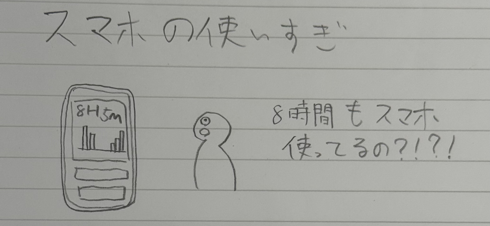

世の中に存在する課題の発見
2025/09/19
【発見した課題】
【大学の授業の出席確認】
大学の授業を受ける前に「ピ」しますよね。
あれ、基本的に大学側が出席管理する用だと思うんですけど、
自分で出席状況を確認出来たらめちゃくちゃ便利だと思うんですよ。
大学の授業って出席状況が良いからといって単位には繋がらないもの
もあるわけでして・・・
この授業何回休んじゃったっけ？ってすぐ確認したい！
【スマホの使い過ぎ】
現代人にとって、スマホって体の一部であると言っても過言ではないですけど、
やっぱりSNSとかの利用時間って減らしていきたいですよね。
「人生は有限や！」

【はじめの一歩】
何をするにしても、なかなか行動に移せない。特にはじめの一歩さえ
踏み出せればすぐ終わることなのに、その一歩が難しいのよ！！
【新作スマホ】
スマホって毎年新しいの出るけど、最近は新しい機能とか性能アップ
も少ないし、ぶっちゃけ関心がなくなってきた。
機種変更とかもめんどいし、自分に合ったものを購入して長く使いたいけど、
せっかく買うならいろいろ吟味したいなあ・・・
ガジェオタ視点からすると、いろいろな機種試して遊びたい！！！笑
【お出かけ先情報】
世の中には、いろいろな「イベント」がありますよね。
だいたいそのイベント情報って、自分が興味関心ある分野からしか集まらない。
面白そうなイベントや展示の情報が回ってくるころには、もう開催期間終わってる
ことが多い！！
悔しい！！aaa